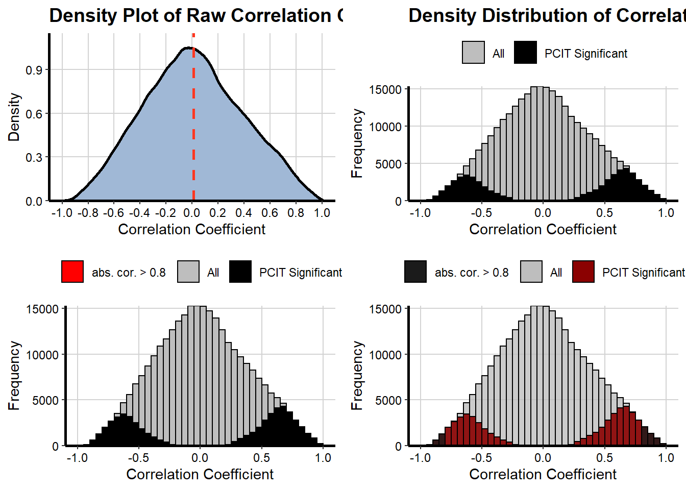
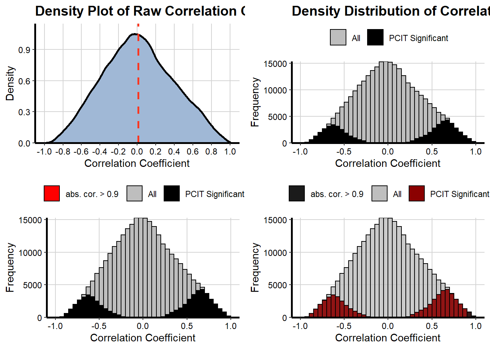

Chapter 11 PCIT
The Partial Correlation Information Theory (PCIT) co-expression analysis is a robust technique for determing biological meaningful correlations between genes across the variability within a dataset.
11.1 Prepare data for PCIT analysis
It is prohibitive to run PCIT on all possible genes, are largely unmeaningful. Instead, the first step in this analysis filters each set of data to include a list of genes that are most likely to be meaningful in a co-expression analysis. Three possible data types can be included: DE, PIF and RIF. For each, the function will use user-defined thresholds to make selections for each pairwise comparison. In this example a small number has been selected to keep the computational load to a minimum. In reality, larger DEn, PIFn and RIFn values might be used.
This function will output a venn plot which is helpful to see how many genes from each catagory were selected. It will also output metadata which is useful for visualisation in cytoscape.
vst_norm_data <- GET_normalised_data(full_norm, vst_or_log2 = "VST")[[1]]
selected_for_PCIT <-
PCIT_prepare_data(data_type_selection = c("DE", "PIF", "RIF"),
norm_exp_data = vst_norm_data,
gene_annotations = gene_annot,
DE_full_out = DE_out,
RIF_output_data = RIF_output,
search_top_level = NULL,
filter_norm_data_columns = TRUE,
DEn = 20 ,
PIF_sig = 2.58,
PIFn = 10,
RIF_sig = 2.58,
RIFn = 10,
export_tables = TRUE,
export_venn_plot = TRUE,
export_dir = "./outputs/PCIT/")## Number of selected genes within dataset: 771## Number of samples within dataset: 105## Directory created: ./outputs/PCIT/11.2 Run PCIT Analysis
This step may take a while, and it may look like R is not doing anything as it is implemented in C in the background. If you have access to the windows exectuable fortran program it would likely be quicker to use that instead.
This function will output a list of tables with different calculated values.
PCIT_norm_counts <- selected_for_PCIT$PCIT_normalised_counts
PCIT_out <-
PCIT_calculate(norm_counts_for_PCIT = PCIT_norm_counts,
key_colname = "gene_name")## Removing rows with duplicated rownames: U6, U6, LYZ1, U6, ITLN2#Check output table
PCIT_out$tab %>% head()## gene1 gene2 corr1 corr2
## 1 5_8S_rRNA ITLN2 0.13753 0
## 2 5_8S_rRNA ENSBTAG00000048770 -0.17807 0
## 3 5_8S_rRNA ENSBTAG00000048794 0.12162 0
## 4 5_8S_rRNA ENSBTAG00000048804 -0.13235 0
## 5 5_8S_rRNA ENSBTAG00000048850 -0.10011 0
## 6 5_8S_rRNA ENSBTAG00000048871 0.24243 011.3 Filter PCIT output for Cytoscape
The output from the PCIT function is not filtered and is also not in a format compatible with Cytoscape software. The PCIT_filter_output() function handles this. It is not always known what the best threshold will be for visualisation, and this step is likely to be done multiple times in practice.
This function will output the required files for visualisation in Cytoscape.
PCIT_filter_output(PCIT_out_data = PCIT_out,
cor_threshold = 0.8,
export_dir = "./outputs/PCIT/")
## Registered S3 method overwritten by 'GGally':
## method from
## +.gg ggplot2
##
## Registered S3 method overwritten by 'ggnetwork':
## method from
## fortify.igraph ggtree
## number of nodes:
## 498
## ./outputs/PCIT/ Directory exists
## Exported data to : ./outputs/PCIT/PCIT_FILTERED_0.8_20220106_2259.txt
## Creating summary density plots...
PCIT_filter_output(PCIT_out_data = PCIT_out,
cor_threshold = 0.9,
export_dir = "./outputs/PCIT/")
## number of nodes:
## 264
## ./outputs/PCIT/ Directory exists
## Exported data to : ./outputs/PCIT/PCIT_FILTERED_0.9_20220106_2259.txt
## Creating summary density plots...
11.4 Viewing in Cytoscape
Firstly, go to https://cytoscape.org/download.html and download Cytoscape.
There is also plenty of help files on their website, but a brief overview is included here.
The exported file from the PCIT_filter_output function will look something like: PCIT_FILTERED_0.8_20220106_0914.txt.
This file is formatted appropriately for Cytoscape to import it easily.
11.4.1 Import PCIT output to cytoscape
To import the file:
Figure 11.1: Select File -> Import -> Network from File
Figure 11.2: Select the required ‘PCIT_filtered_’ file and Open it
Figure 11.3: Make sure the first column is a green circle and the second column is the orange circular symbol. Click OK.
Once this is done you should see a display of the network being built.
11.4.2 Import metadata for genes
It is also helpful to include more information about the genes in Cytoscape to help with interpretation. One way is to do the following:
Figure 11.4: Select File -> Import -> Table from File
Figure 11.5: Select the ‘genes_summary’ file
Figure 11.6: Change the key to match the’key_colname = ’ value from PCIT function, in this case it is the gene_name column. Click on column heading to change.
11.4.3 Further Details
Further help is available in the manual: http://manual.cytoscape.org/en/stable/